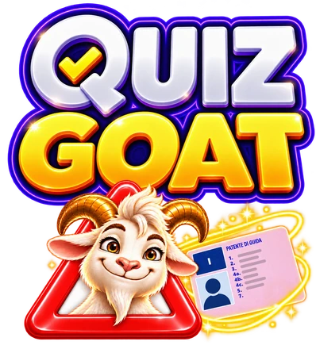
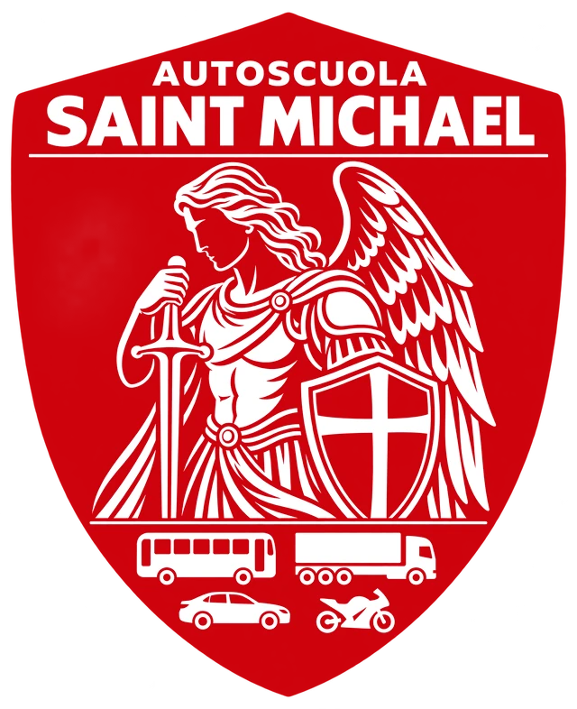
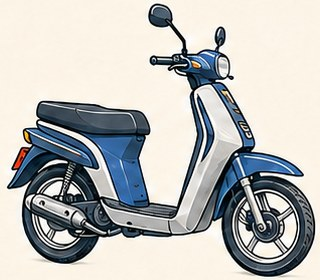
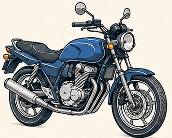
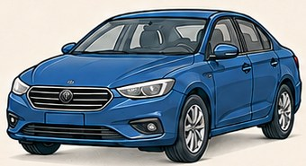
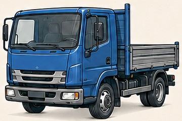
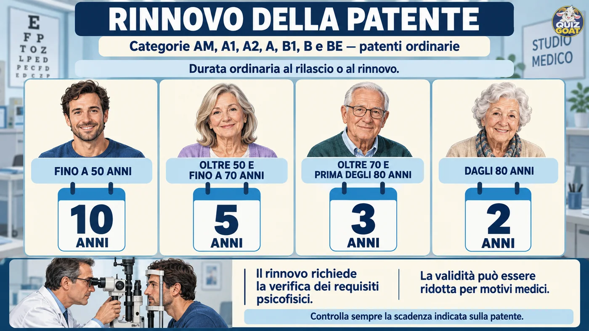

Gioia del Colle
Autoscuola Saint Michael
- Indirizzo
- Via Dante Alighieri 76A, 70023 Gioia del Colle (BA)
- Telefono
- 080 964 6134
- 376 052 8767
- autoscuolasaintmichael25@outlook.it
- Orari
- Dal lunedì al venerdì, 9:30-12:00 e 17:00-20:00
Gruppo Saint Michael
Da oltre quarant’anni portiamo alla patente gli allievi di Gioia del Colle, di Casamassima e dei dintorni. Ti seguiamo noi, dalla prima lezione di teoria al giorno dell’esame.

ProssimamenteQuiz GOATL’app con teoria e quiz›
Gli avvisi delle due sedi e i corsi in partenza.
Scrivici su WhatsApp o passa in sede. Ti diciamo il giorno e che cosa portare. Vedi il rinnovo
L'app con teoria e quiz per tutte le patenti e le abilitazioni. Apri la pagina
In questo momento non ci sono avvisi.
Stiamo preparando il calendario dei prossimi corsi. Per le date scrivici su WhatsApp o passa in sede.
Siamo una famiglia che fa scuola guida da oltre quarant’anni. Michael, insegnante di teoria e istruttore di guida, lavora ogni giorno con il padre, la madre, la moglie e la sorella. Insieme portiamo avanti le autoscuole Saint Michael, a Gioia del Colle, e Santamaria, a Casamassima.
Ci mettiamo il nome e la faccia. Per questo seguiamo ogni allievo di persona, dalla teoria alla guida.
Vieni a conoscerci: il preventivo è gratuito e senza impegno. Ti spieghiamo il percorso, i costi e l’organizzazione delle lezioni, così scegli con calma e con le idee chiare.
Ti prepariamo noi, in aula e alla guida. Scegli una voce: trovi età, documenti e come si svolge l’esame.

AMCiclomotori e quadricicli leggeri
A1 · A2 · AMotocicli
B · BEAuto e rimorchi
C · DAutocarri e autobusLa patente scade. Per continuare a guidare la rinnovi con una visita medica. Prenota con noi la visita: ti diciamo il giorno e che cosa portare.

| Patente | Durata | Poi |
|---|---|---|
| AM, A1, A2, A, B1, B, BE | 10 anni | 5 anni dopo i 50 anni di età, 3 anni dopo i 70, 2 anni dopo gli 80 |
| C1, C1E, C, CE | 5 anni | 2 anni dopo i 65 anni, con visita in commissione medica locale |
| D1, D1E, D, DE | 5 anni | 3 anni dai 70 anni, 2 anni dopo gli 80 |
| CQC | 5 anni | si rinnova con un corso di 35 ore: vedi CQC |
Le regole che servono ogni giorno a chi guida, spiegate con le tavole che usiamo in aula.
Le risposte alle domande che ci fate più spesso in segreteria.
Un documento di identità valido, il codice fiscale o la tessera sanitaria e il certificato della visita medica, rilasciato da non più di 3 mesi. Se sei minorenne serve anche il documento di un genitore.
Passa in sede con i documenti: la pratica la prepariamo noi.
Dipende dalla patente e dal percorso. Il preventivo è gratuito e senza impegno: scrivici su WhatsApp o passa in sede.
30 domande in 20 minuti. Lo superi con al massimo 3 errori.
Con una persona seduta accanto a te come istruttore: non più di 65 anni, patente della stessa categoria da almeno 10 anni oppure di categoria superiore. Sull’auto ci vuole il contrassegno con la lettera P.
Per la patente B, prima fai in autoscuola le guide in autostrada o su strade extraurbane e di notte. Poi porti con te la certificazione che ti rilasciamo.
Ti aspettiamo in segreteria negli orari di apertura. Se preferisci, scrivici su WhatsApp: ti rispondiamo noi.
Gioia del Colle
Casamassima
Senza impegno. Scrivici o passa in sede: ti diciamo costi, tempi e che cosa portare.